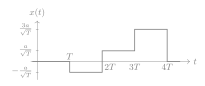
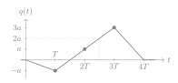

Seminar 7. Intersymbol interference in PAM
The seven questions of the session, each with three options and one correct answer. Work out your answer before opening a solution.
A transmitter sends bits with the 4-PAM constellation below, with a>0 and the labels shown, two bits per symbol.
The symbols x_1,x_2,x_3 are sent as x(t)=\sum_{i=1}^3x_i\,\phi(t-iT), with the rectangular pulse \phi(t)=1/\sqrt T on [0,T) and zero elsewhere, and period T>0, so the symbol x_i occupies [iT,(i+1)T). The receiver filters with h(t)=\phi(-t). By Section 5.3 of the notes, without noise the filter output is q(t)=\sum_{k=1}^3x_k\,g(t-kT), where g(\tau)=1-|\tau|/T for |\tau|\leq T and g(\tau)=0 otherwise. The samples go to the nearest-point detector of 4-PAM. The six bits to send are 01\;11\;10, and there is no additive noise in questions 4 to 6.
Question 1. Which symbols (x_1,x_2,x_3) carry the six bits? Draw the transmitted waveform x(t) and mark its levels.
(a) (-3a,a,3a).
(b) (-a,3a,a).
(c) (-a,a,3a).
Show solution
The correct answer is (c) ★
The mapper of Section 5.1 reads the bits two at a time. With the labels of the figure, 01 is -a, 11 is a and 10 is 3a, so (x_1,x_2,x_3)=(-a,a,3a). By Section 5.2 the symbol x_i occupies [iT,(i+1)T) with the level x_i/\sqrt T. The answer is (c).

Question 2. The bit rate is R_{\rm b}=6 Mbit/s. What is the symbol period T? Obtain the symbol rate first.
(a) \tfrac16\,\mus.
(b) \tfrac13\,\mus.
(c) \tfrac1{12}\,\mus.
Show solution
The correct answer is (b) ★
Without coding each symbol carries \log_24=2 bits, so by Section 5.1 \begin{equation*} R_{\rm s}=\frac{R_{\rm b}}{\log_2M}=3\text{ Msymbols per second} \end{equation*} and T=1/R_{\rm s}=\tfrac13\,\mus. The answer is (b).
Question 3. What is the energy per bit \Eb of this constellation, with equiprobable points? Calculate the energy per symbol \Es first.
(a) \tfrac52a^2.
(b) 5a^2.
(c) 10a^2.
Show solution
The correct answer is (a) ★
The four points have squared values 9a^2, a^2, a^2 and 9a^2, so by Section 5.1 \begin{equation*} \Es=\tfrac14\bigl(9a^2+a^2+a^2+9a^2\bigr)=5a^2. \end{equation*} Each symbol carries two bits, so \Eb=\Es/2=\tfrac52a^2. The answer is (a).
Question 4. What is the filter output at t=\tfrac{5T}2, halfway between the instants of the second and the third symbols? Draw q(t) for 0\leq t\leq4T.
(a) a.
(b) 4a.
(c) 2a.
Show solution
The correct answer is (c) ★
In q(t)=\sum_kx_k\,g(t-kT) the triangle of the second symbol is evaluated at \tfrac T2 and that of the third at -\tfrac T2, where g=\tfrac12, and the triangle of the first symbol is zero there. Hence \begin{equation*} q\bigl(\tfrac{5T}2\bigr)=\tfrac12x_2+\tfrac12x_3=\tfrac12a+\tfrac32a=2a. \end{equation*} The sum of the three triangles joins the points (kT,x_k) by straight lines, from q(0)=0 to q(4T)=0. The answer is (c).

Question 5. The receiver samples too early, at t=iT-\tfrac T4. What are the three samples? Check whether the three decisions are still correct.
(a) -\tfrac12a, \tfrac32a and \tfrac94a.
(b) -\tfrac34a, \tfrac12a and \tfrac52a.
(c) -\tfrac34a, \tfrac34a and \tfrac94a.
Show solution
The correct answer is (b) ★
At t=iT-\tfrac T4 the triangle of the symbol x_i is evaluated at -\tfrac T4, where g=\tfrac34, and the triangle of the previous symbol at \tfrac{3T}4, where g=\tfrac14. The next symbol does not contribute, because g(-\tfrac{5T}4)=0. Hence \begin{equation*} q\bigl(iT-\tfrac T4\bigr)=\tfrac34x_i+\tfrac14x_{i-1},\qquad x_0=0. \end{equation*} The samples are -\tfrac34a, \tfrac34a-\tfrac14a=\tfrac12a and \tfrac94a+\tfrac14a=\tfrac52a. With the thresholds 0 and \pm2a the decisions are -a, a and 3a, all correct. The second term is the intersymbol interference of Section 5.3. The answer is (b).
Question 6. The receiver now samples much earlier, at t=iT-\tfrac{3T}4. How many of the three decisions are wrong?
(a) Two.
(b) One.
(c) None.
Show solution
The correct answer is (a) ★
As in question 5, now with g(-\tfrac{3T}4)=\tfrac14 for the symbol x_i and g(\tfrac T4)=\tfrac34 for the previous one, \begin{equation*} q\bigl(iT-\tfrac{3T}4\bigr)=\tfrac14x_i+\tfrac34x_{i-1},\qquad x_0=0. \end{equation*} The samples are -\tfrac14a, \tfrac14a-\tfrac34a=-\tfrac12a and \tfrac34a+\tfrac34a=\tfrac32a. With the thresholds 0 and \pm2a the decisions are -a, -a and a, while -a, a and 3a were sent: the second and the third are wrong. In the second and the third samples the previous symbol weighs \tfrac34 and the own symbol \tfrac14; the first is only attenuated, since x_0=0. The intersymbol interference causes errors without any noise. The answer is (a).
Question 7. The same six bits can be sent with QPSK, which puts one bit on a cosine and one on a sine in each period, each as \pm a (Section 5.4). Both systems send two bits per period with minimum distance 2a. With equiprobable points in both constellations, what is the ratio between the average energy per bit of 4-PAM, from question 3, and that of QPSK?
(a) 5.
(b) \tfrac52.
(c) \tfrac54.
Show solution
The correct answer is (b) ★
A QPSK symbol has the two coordinates \pm a, so its energy is \Es=a^2+a^2=2a^2 for every point, and with two bits per symbol \Eb=a^2. By question 3, 4-PAM has \Eb=\tfrac52a^2, so the ratio is \begin{equation*} \frac{\tfrac52a^2}{a^2}=\tfrac52, \end{equation*} about 4 dB. For the same bit rate and the same minimum distance, a second coordinate on the sine costs less energy than two more levels on the same coordinate. The answer is (b).